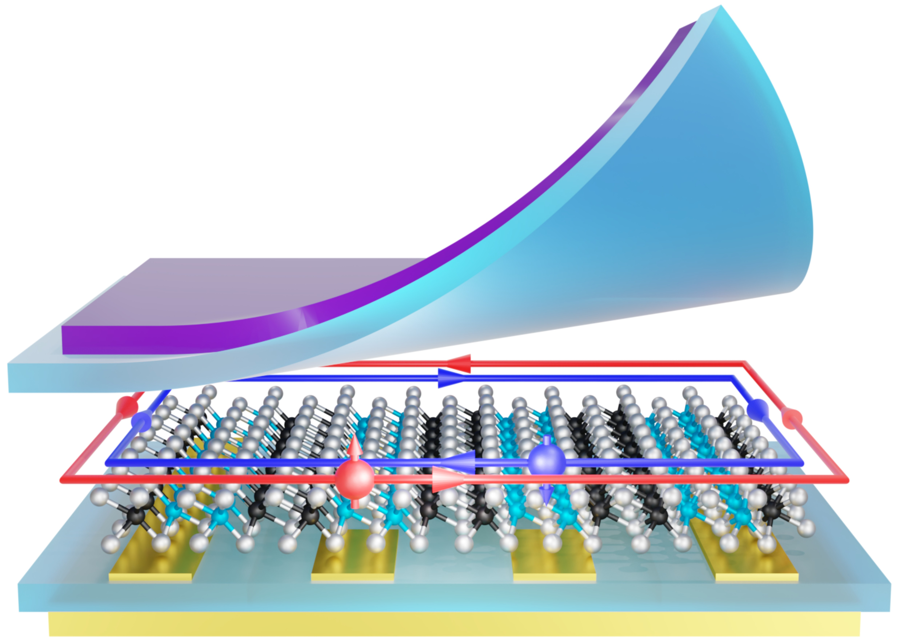

We explore the frontier where topology intersects with electron correlations in low-dimensional quantum materials and van der Waals heterostructures. By tuning electrostatic gating, layer stacking, twist angle, and proximity to ferromagnets or superconductors, we create and probe new quantum states arising from the interplay of symmetry, topology, electron interactions, lattice instabilities, and electron-phonon coupling, etc. Our goal is to uncover novel topological and correlated phases and to advance the understanding and control of emergent phenomena in a series of new quantum materials.